Find your sound. Make yourself at home.
A practical guide to FluidEQ, illustrated with real app captures. Start with your first listening session, then explore each part of the app at your own pace.
28 chapters · 30 real interface captures · OfflineIn FluidEQ: Help → User guide, or press F1.
Real FluidEQ captures from versions 1.6 and 1.7. Colours, labels and control positions may differ in your version. Example settings are illustrations, not recommended presets.
Your first five minutes
Start with a familiar song at a comfortable volume. The left rail switches FluidEQ on and holds the preamp; the centre is your workspace; the right rail follows your output and its profiles. The bar at the foot of the window controls whatever is playing.

Try it
- Install FluidEQ and keep the FluidEQ Engine selected when setup asks how to process your sound. Windows asks for permission once, with no restart.
- Choose your listening device under Output device. Turn on System EQ and leave Auto normalize on.
- Play a song, open EQ → Bands, make a small change, and compare with System EQ off and on.
What your PC needs
FluidEQ runs on any Windows PC of the last ten years. Two parts ask for more than the rest: the Plus visualizers draw on the graphics card, and the karaoke AI downloads its models the first time you use it.
Try it
- Check your Windows: Windows 10 version 1803 or later, or Windows 11, 64-bit, 4 GB of memory and about 600 MB of disk. Processing everything the PC plays needs the FluidEQ Engine or Equalizer APO, and Windows asks for permission once while it installs.
- Look at a visualizer: any graphics card or built-in graphics from 2013 onwards. At 1080p built-in graphics are enough; 4K, or a desktop background on several screens at once, is happier with a dedicated card. On a busy card FluidEQ draws the scene smaller and lets go of the ones you cannot see.
- Try the karaoke AI: separating a voice downloads a 713 MB model the first time, the pitch model adds about 180 MB, and noise removal 11 MB. With a DirectX 12 graphics card a four-minute song separates in around half a minute; on the processor alone it takes about four minutes. Keep 2 GB of memory free while it works.
- Aim for this if you can: Windows 11, 8 GB of memory, graphics from 2018 onwards, and 3 GB of disk free if you use the AI features.
The FluidEQ Engine
FluidEQ processes your sound with its own engine or with Equalizer APO. The FluidEQ Engine runs inside Windows' audio service after your sound card's effects, brings your EQ and the DSP rack to everything the PC plays, and steps aside the moment FluidEQ closes.
{kind=link}
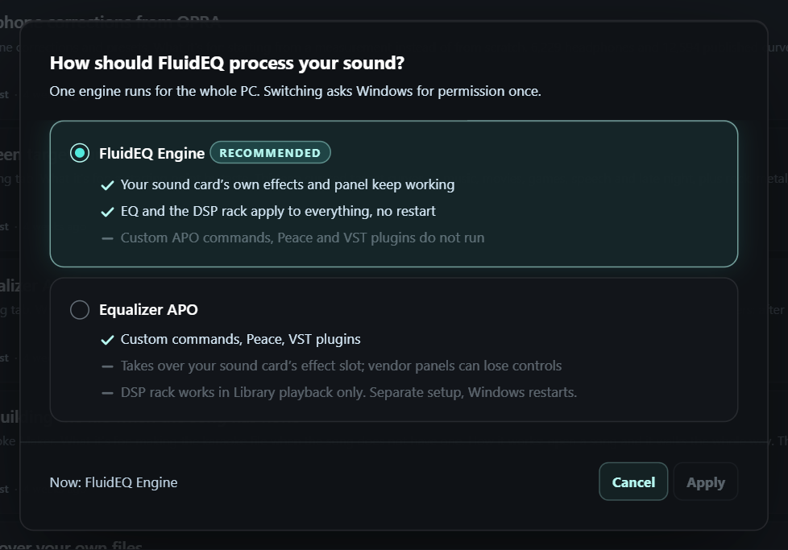
- FluidEQ EngineRecommended. Your sound card's effects keep working, and the EQ and DSP rack reach every app.
- Equalizer APORuns custom APO commands, Peace and VST plugins. The DSP rack stays with Library playback.
- ApplySwitches the engine. Windows asks once, and audio restarts for a few seconds.
Try it
- Open the actions menu — the pulse button at the top right — and press the engine card at the top of it.
- Choose FluidEQ Engine and press Apply. Windows asks for permission, and audio pauses for a few seconds while it restarts.
- If an output shows OFF, press Enable on its notice. If a notice says the engine is not running, press Restart Windows audio.
Shape your sound with EQ
Frequency chooses where a band acts, Gain sets the boost or cut, and Q sets its width: higher Q is narrower. Begin with small, broad changes and compare often.
The Bands page
{kind=link}
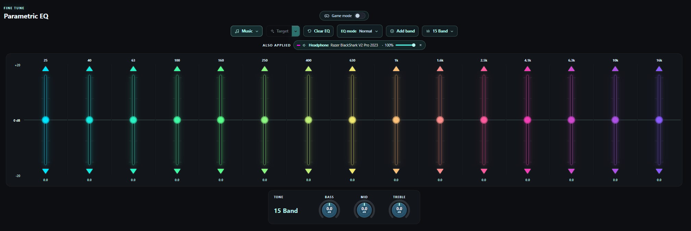
- VoicingA quick character for the sound, such as Music or Movies.
- Smart EQListens to what plays and corrects it: Detail, Balance or Target.
- Clear EQSets every gain to 0 dB and keeps your bands. Asks first.
- EQ modeHow strongly your EQ and curves apply, band Q and phase.
- Add bandAdds a band beside the selected one.
- Quick layoutsBand counts, and the band designs you saved.
- FrequencyWhere the selected band acts, from 1 Hz to 20 kHz.
- GainHow much it boosts or cuts. Ctrl-click returns it to 0 dB.
- Quality (Q)How wide it is: higher is narrower.
- Delete bandPress twice to delete the band; Keep changes your mind.
A band's right-click menu
{kind=link}
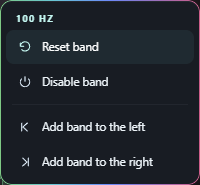
- Reset bandGain back to 0 dB and Q back to 2.
- Disable bandTakes the band out of the sound and keeps its settings.
- Add band to the leftAdds a band halfway to its lower neighbour.
- Add band to the rightAdds a band halfway to its higher neighbour.
Try it
- Select a band in EQ → Bands. Turn its Frequency, Gain and Quality (Q) dials, or drag its point on the graph.
- Right-click a band to reset it, switch it off, or add a band beside it. Ctrl-click a slider or dial to return it to its default.
- Press Clear EQ to set every gain to 0 dB while keeping your bands. It asks first.
EQ mode and band designs
EQ mode changes how your bands and your correction curves are applied, without editing them. Band designs keep the frequencies and Q of a layout you like, ready for any output.
EQ mode
{kind=link}
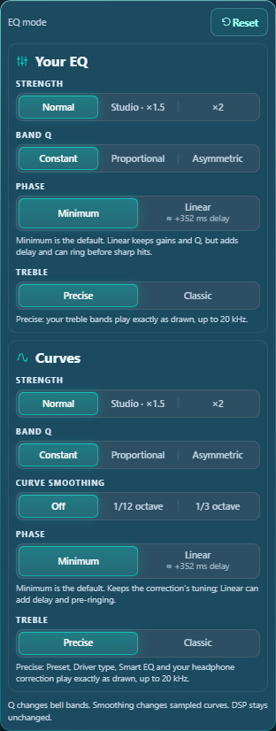
- StrengthNormal, Studio ×1.5 or ×2, for your EQ and your curves separately.
- Band QConstant keeps each Q; Proportional and Asymmetric narrow bands as they grow.
- Curve smoothingSoftens sampled correction curves.
- PhaseMinimum or Linear. With the FluidEQ Engine only.
- ResetEverything back to Normal.
Band designs
{kind=link}
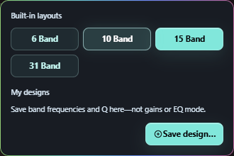
- Built-in layoutsStandard layouts of 6, 10, 15 or 31 bands.
- Save design…Names the current frequencies and Q as a design, listed under My designs.
Try it
- Open EQ mode on the Bands toolbar. Try a Strength, Band Q or Curve smoothing choice while music plays; the panel stays open.
- Under the FluidEQ Engine, choose Minimum or Linear phase. Press Reset to return everything to Normal.
- Open the layouts button beside Add band. Pick 6, 10, 15 or 31 bands, or press Save design… to name the current layout.
Headphone correction & imports
A headphone correction compensates for a measured model. It is a starting point you can combine with your own bands and voicing. Check the exact model and the measurement author before applying a result.

Try it
- Open EQ → EQ presets and search for your headphone model. Review the available measurements and choose the matching entry.
- For EQ text from another tool, use Import EQ settings in the actions menu. Review the parsed bands and curve before applying.
- For Squiglink, paste its export into the import panel. Apply as EQ replaces your bands; Apply as curve adds it as a headphone correction with its own strength.
Use an impulse response
Convolution applies a WAV impulse response as another correction layer. FluidEQ includes a searchable AutoEq catalogue and can import your own WAV. It remains separate from the editable parametric bands.

Try it
- Open EQ → Convolution. Search by model or measurement author.
- Check the source, then use Download & apply; the download matches your output’s rate. Use Import a WAV for a file you already have.
- Listen with the convolution layer on and off in Also applied.
Devices, profiles & second output
Your EQ follows the output device. Automatic mapping saves edits to the current output, while Named profiles lets you keep alternative sounds. Second output mirrors playback to other devices with a separate level for each.

Try it
- Confirm Output device before editing. Use New profile for a sound you want to keep; Update saves changes to that named profile, and Restore brings its saved settings back.
- Open Second output, enable a reachable device, and set its level. Choose that device’s saved EQ profile directly beneath it.
- Use Game/Video for a smaller starting buffer or Music for more reserve. Compare synchronization on your devices.
Inspect & back up a chain
EQ → Config shows what the audio engine actually has on disk. The output cards and include tree help you see which device and layers are involved. Export a chain before a large experiment or when moving a setup.

Try it
- Open EQ → Config and choose the output you want to inspect. Read its status and active layers.
- Use Export chain to save a .fluideq file. Keep a copy somewhere you can find again.
- To bring a chain back, select the intended output first, then use Import chain and review the result.
Explore the DSP rack
The DSP rack is a chain of studio stages. Under the FluidEQ Engine it processes everything the PC plays; under Equalizer APO it processes Library audio tracks. It is off while FluidEQ is switched off.
{kind=link}
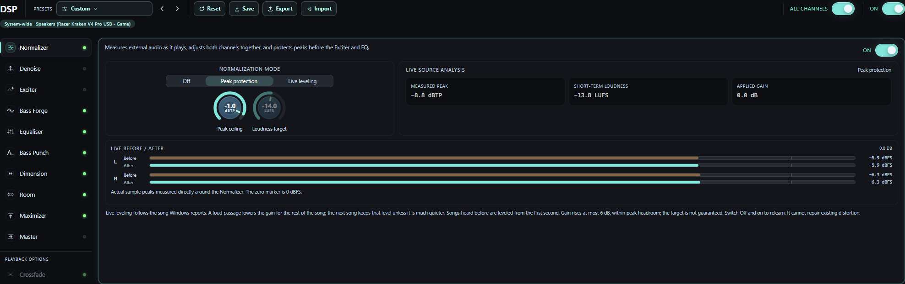
- NormalizerEvens out loudness. On live audio it levels song by song.
- DenoiseRepairs hiss, hum and clicks. The neural voice cleaner works on Library tracks.
- ExciterAdds harmonics for body and air.
- Bass ForgeAdds a real octave below the bass, or its harmonics for small speakers.
- EqualiserFifteen parametric bands, with minimum or linear phase.
- Bass PunchShapes the attack, sustain and bloom of the bass.
- DimensionWidens the stereo picture without changing the mono sum.
- MaximizerRaises the level without letting peaks pass the ceiling.
- MasterFinal level, loudness target and peak safety.
- CrossfadeBlends one Library track into the next.
- PresetsWhole-rack chains for genres, devices and repairs.
- System-wideWhere the rack is running, and any delay linear phase adds.
Try it
- Open DSP. Pick a chain under Presets, or select a stage in the rail and switch it On.
- Change one control at a time and compare with the stage bypassed at a similar volume. Isolate lets you hear only what a stage adds.
- Save a rack you like, and use Export and Import to share it.
The Room: surround on headphones
The Room turns headphones into a listening room. Every channel of the sound becomes a speaker standing around your head, rendered through a measured head and the reflections of a room you shape yourself, so a film sits in front of you and a game surrounds you. It needs the FluidEQ Engine and headphones; on speakers it does nothing useful.
{kind=link}
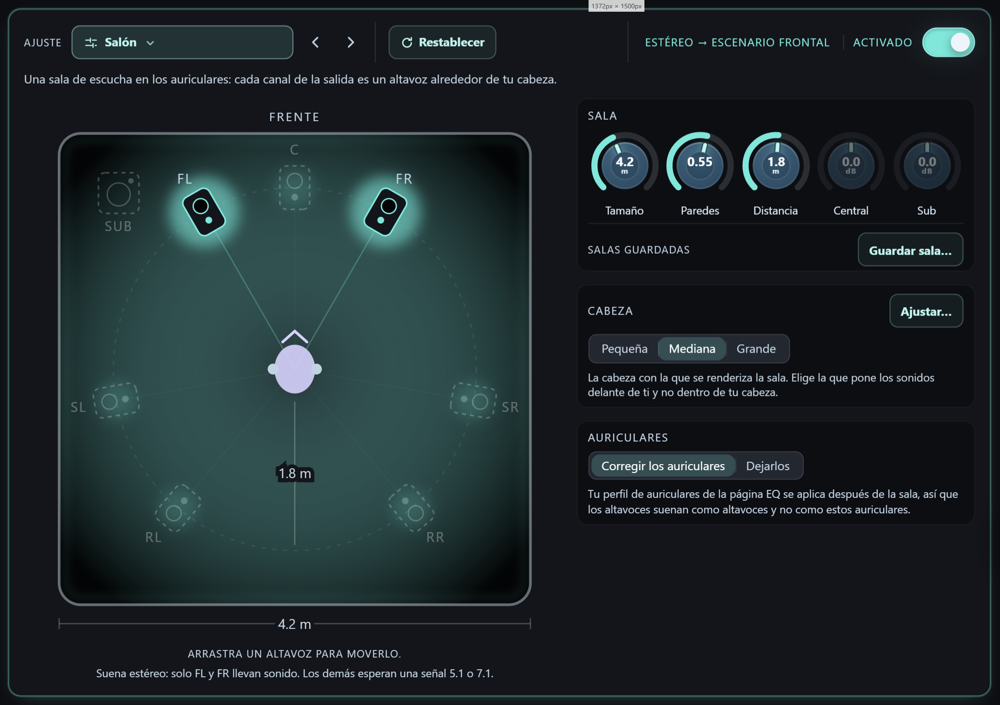
- Room presetThe rooms to start from, grouped like every other stage's profiles; Custom once you shape one.
- The room from aboveThe room from above: walls that fade as they absorb, the speakers on their ring, the head in the middle. Drag a speaker to move it. Press one to set it by itself: its level, its own distance, its angle by number, and Mute and Solo to hear it alone.
- Size, Walls, Distance, Centre, SubThe room's side in metres, how much its walls absorb, how far the speakers stand, and the centre's and the sub's level.
- Fit…Five listening pairs that pick the head for your ears.
- HeadThe measured head the room renders through: small, medium or large.
- HeadphonesWhether your headphone profile from the EQ page runs after the room, so the speakers sound like speakers.
- Save room…Name the room as it stands; it comes back with a press.
- What the room is doingRead from the engine: which speakers the playing stream reaches, or why the room is idle.
Try it
- Open DSP, choose Room in the rail and switch it on. Stereo becomes two speakers in front of you; a 5.1 film five and the sub; a 7.1 game the whole ring. The chip beside the switch says which.
- Pick a room at the top — studio, living room, cinema, concert hall and more — or turn Size, Walls and Distance yourself and drag a speaker around the ring. Speakers the playing stream cannot reach are drawn asleep.
- Press Fit and answer five short listening pairs: the room takes the head that puts sounds in front of you. Small, Medium and Large can be chosen by hand too.
- Save a room you like under a name; a saved room comes back with a press and never changes your head.
Denoise & source analysis
Denoise reduces hiss, mains hum and clicks. Under the FluidEQ Engine it works live on anything the PC plays; the neural voice cleaner and the scanned noise floor are for Library tracks. Stronger reduction is not automatically better.

Try it
- Play something with the noise you want to reduce and select Denoise in DSP.
- Switch on Hiss, Hum or Clicks with a light setting, and listen to quiet passages and to musical detail.
- Increase reduction gradually, then bypass the stage to check that the improvement is worth any loss of detail.
The graph and its controls
The response graph draws your EQ curves over the live sound. The strip above it chooses what is drawn and how, and it changes with the look: a standard style or a Plus visualizer.
With a standard style
{kind=link}
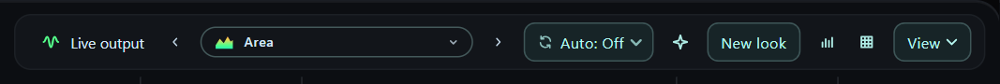
- Live outputShows or hides the live wave.
- Previous styleCtrl+SpaceSteps back to the previous look.
- Styles and visualizersOpens every style and visualizer.
- Next styleSpaceSteps forward to the next look.
- AutoChanges the look every 10 seconds to 2 minutes.
- ColouringColours the style: Auto, Flat, Frequency, Level or Heat.
- New lookDesigns a look of your own from this style.
- Listening bandsShades the bands you hear most.
- GridCtrl+GShows or hides the grid and scales.
- ViewSize, what is drawn, and the wave.
With a Plus visualizer
{kind=link}
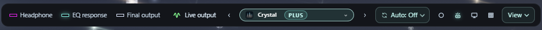
- Window coloursThe app's theme, the visualizer's colours, or its colours with light (Ambient).
- Dynamic lightingLights your RGB devices with this scene.
- Set as desktop backgroundPuts this visualizer behind your desktop icons.
The View menu
{kind=link}
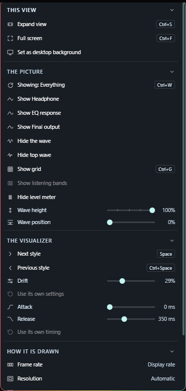
- Expand viewCtrl+SThe graph grows over the editor.
- Full screenCtrl+FThe graph fills the screen.
- ShowingCtrl+WSteps through what the graph shows.
- The waveThe live spectrum drawing.
- Top waveThe small wave in the title bar.
- GridCtrl+GShows or hides the grid and scales.
- Listening bandsThe same shading; greyed over a Plus visualizer, which never draws it.
- Level meterThe output meter in the left rail.
- Wave heightHow tall the wave is drawn.
- Wave positionFrom the bottom edge up to the middle.
- Next styleSpaceSteps forward to the next look.
- Previous styleCtrl+SpaceSteps back to the previous look.
- AttackHow fast a Plus visualizer rises to the music.
- ReleaseHow slowly it falls back after each hit.
- Use its own timingBack to the timing the visualizer came with.
- Set as desktop backgroundPuts this visualizer behind your desktop icons.
Try it
- Click the look’s name to choose a style or visualizer. The arrows beside it, Space and Ctrl+Space step through them.
- Open View for the graph’s size, what it shows, and the wave’s height and position.
- Double-click the plot for full screen. A single click hides or shows the strip.
Styles and Plus visualizers
Standard styles are free drawings of the live sound that you can colour and design yourself: Line and Area for a clean trace, LED blocks and Spikes for punch, Truss, Skyline and Dancing flames for whole scenes. Plus visualizers are scenes drawn on the graphics card, such as Alpine, Aurora, Bloom and Neon City, where the bass, the beat and the treble each move something different.
{kind=link}
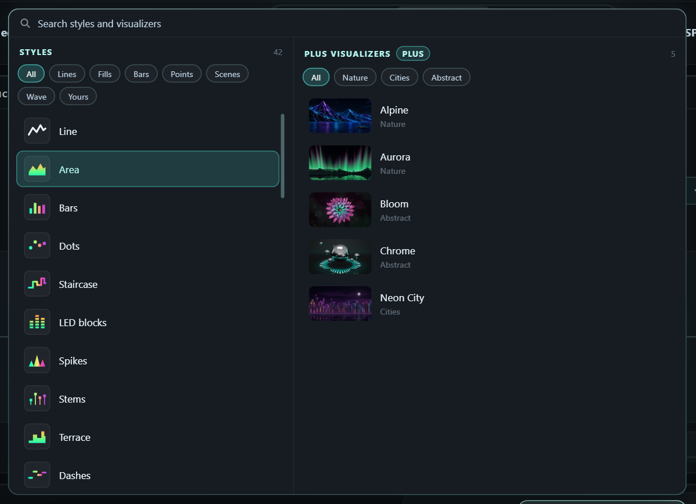
- SearchFinds styles and visualizers by name, maker or category.
- StylesFree styles drawn by FluidEQ, and the looks you saved.
- Style filtersLines, Fills, Bars, Points, Scenes and Yours.
- Plus visualizersScenes from FluidEQ and from members, each with a picture.
- CategoriesNature, Cities, Abstract and more.
Try it
- Click the look’s name on the graph. Search, or filter the styles by Lines, Fills, Bars, Points or Scenes.
- Choose a Plus visualizer on the right. Without Plus it is locked, and choosing it explains how to get it.
- On a standard style, press New look to change its colours, motion and peaks, then save it; it appears under Yours.
FluidEQ Plus and your account
An account is optional: everything that was free runs on this computer without one, and any account can make one scene in the Studio. FluidEQ Plus, monthly or yearly, adds Visualizers, the Leaderboard, Dynamic lighting and the desktop visualizer, and takes what the Studio makes to your looks, the gallery and other members.
{kind=link}
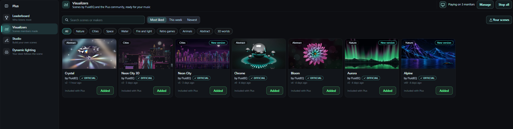
- LeaderboardWho listens most, among Plus members who join.
- VisualizersScenes by FluidEQ and members, ready for your music.
- StudioMake your own scenes with your AI.
- Dynamic lightingYour RGB devices follow the scene.
- Collapse the sidebarFolds the rail to its pictures; it opens again on hover.
Try it
- Open Account in the actions menu. Sign in, or create an account and type the six-digit code sent to your email.
- Press Upgrade to Plus, read the terms, tick that you agree, and pay on Buy Me a Coffee in your browser with the same email.
- Open the Plus tab. Its rail leads to the Leaderboard, Visualizers, the Studio and Dynamic lighting.
The Visualizers gallery
Visualizers holds FluidEQ’s own scenes and the ones members publish. Any account can browse and try FluidEQ’s free samples for ten seconds; Plus plays every scene on your music and adds it to your looks.
- Search scenes or makersFinds scenes and makers.
- SortMost liked, liked this week, or newest.
- CategoriesShows one kind of scene.
- Your scenesThe scenes you published, with their likes.
- A sceneIts picture opens the scene; Add puts it in your looks.
- ManageWhat each monitor shows as a desktop background.
- Stop allStops every desktop background.
A scene's page
{kind=link}
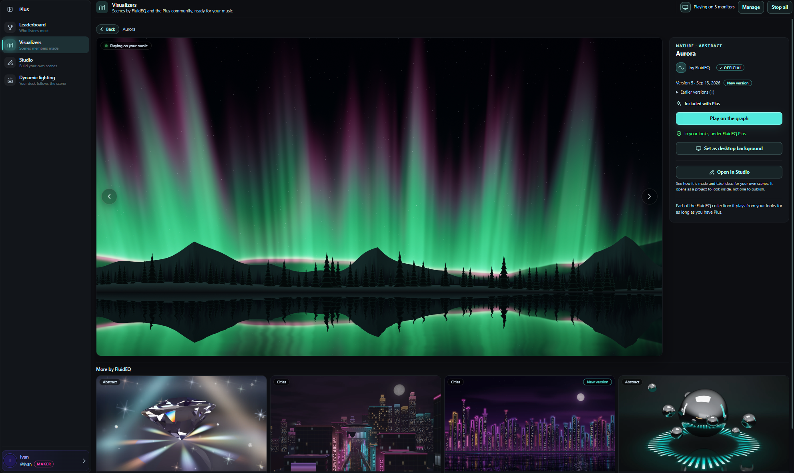
- BackBack to the gallery, where you left it.
- Previous and next← →Steps through the list you opened the scene from.
- Play on the graphAdds the scene to your looks, or plays it on the graph.
- Set as desktop backgroundPuts the scene behind your desktop icons.
- Open in StudioOpens FluidEQ’s scene in the Studio to see how it is made.
Try it
- Open Plus → Visualizers. Search, sort by Most liked, This week or Newest, or pick a category.
- Open a scene, press Add to my looks, then Play on the graph. The arrows, or ← and →, step between scenes.
- Like members’ scenes with the heart, and report one that should not be there.
The Leaderboard
The Leaderboard ranks the Plus members who join it, by how much they listen and by the likes their scenes earn. It is off unless you join.
{kind=link}
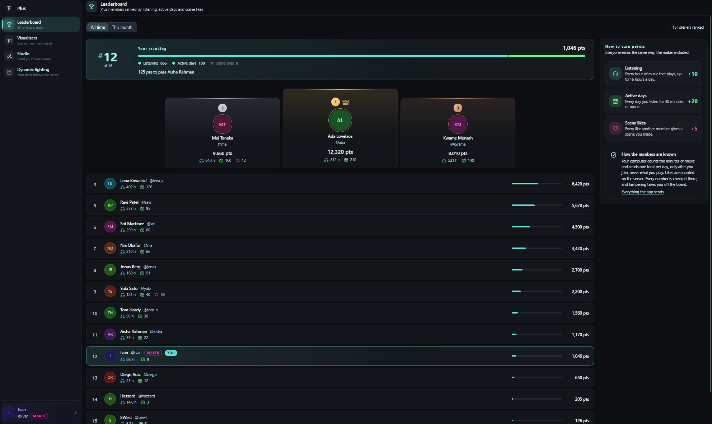
- All time or This monthThe whole history, or this month only.
- Your standingYour rank and points, and how far the next place is.
- How to earn points10 points an hour, 20 for each day of 30 minutes or more, 5 for each like.
Try it
- Open Account and press Join the leaderboard.
- Open Plus → Leaderboard. Choose the handle and name the board shows, then switch between All time and This month.
- To stop, press Leave the leaderboard. Remove all my data deletes everything you sent.
Make scenes in the Studio
The Studio turns a description into a visualizer. Your own AI assistant writes the scene in a project folder, and FluidEQ plays each version on your music the moment it is saved.
{kind=link}
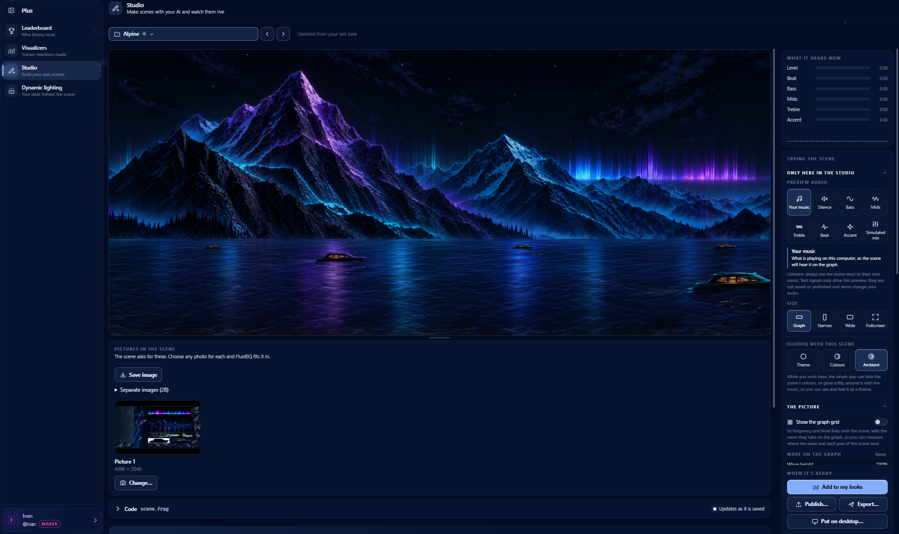
- ProjectYour projects, and FluidEQ scenes to look inside.
- Previous and next projectSteps back or forward through your projects.
- StageThe scene, playing on your music. Double-click for full screen.
- CodeThe scene’s code, live, updated as your AI saves it.
- Copy AI promptCopies the prompt that tells your AI how scenes are made.
- What it hears nowWhat the scene receives: level, beat, bass, mids, treble.
- Preview audioTest signals that drive only this preview.
- SizeTries the scene on a graph, narrow, wide or full-screen panel.
- Wave on the graphTries the wave height and position listeners can set.
Try it
- Open Plus → Studio and press New project…. Give it a name; FluidEQ makes its folder with a scene that already moves.
- Describe your idea, open the folder in your AI assistant, and paste the prompt from Copy AI prompt.
- Watch the stage as files are saved and try the test signals. Then, with Plus, Add to my looks, Publish… or Export….
The desktop visualizer
The desktop visualizer puts a Plus visualizer behind your desktop icons, on one monitor or on each of them, for as long as FluidEQ runs.
{kind=link}
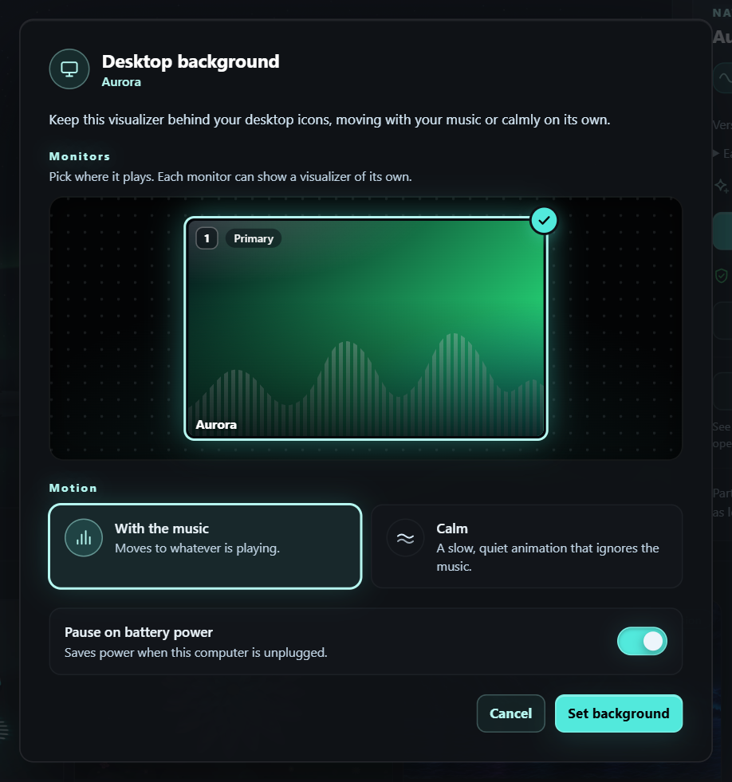
- MonitorsYour monitors as Windows arranges them. Press the ones to use.
- With the musicMoves to whatever is playing.
- CalmA slow, quiet animation that ignores the music.
- Pause on battery powerSaves power while the computer is unplugged.
- Set backgroundStarts it on the monitors you chose.
Try it
- Put a Plus visualizer on the graph and press the monitor button beside its name, or choose View → Set as desktop background.
- Press the monitors on the map, choose With the music or Calm, and press Set background.
- To change or stop it, open Plus → Visualizers and use Manage or Stop at the top.
Dynamic lighting (beta)
Dynamic lighting lights your keyboard, mouse, mousepad, headset and stand with the Plus visualizer on the graph, through Windows Dynamic Lighting and Razer Chroma. It is in beta, so tell us how your devices behave.
{kind=link}
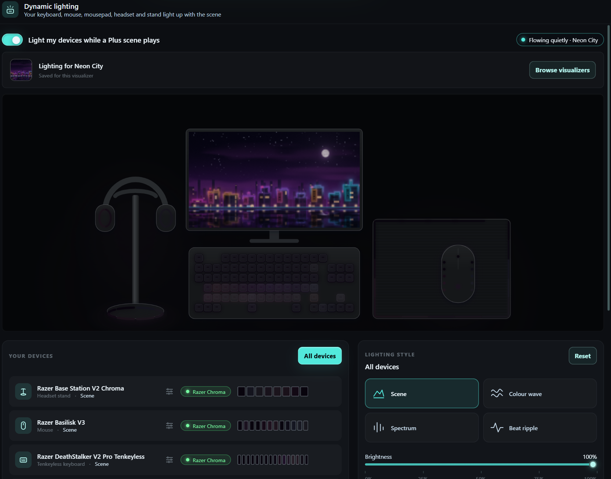
- Light my devices while a Plus scene playsLights your devices while a Plus visualizer plays.
- Browse visualizersOpens the gallery to choose a visualizer.
- Live desk previewYour own desk, lit with the colours sent to it.
- Your devicesEvery device found. Click one to tune it alone.
- All devicesBack to tuning every device at once.
- Lighting styleScene, Colour wave, Spectrum or Beat ripple, kept for each visualizer.
Try it
- Open Plus → Dynamic lighting and switch it on, or press the lighting button beside a Plus visualizer on the graph.
- Choose this visualizer’s lighting style — Scene, Colour wave, Spectrum or Beat ripple — and set its brightness and what it responds to.
- Click a device under Your devices to tune it alone; All devices goes back to every device.
Listen with Online Media
Online Media keeps supported sites beside your EQ. Site playback and sign-in still depend on the provider and your connection. The bar at the foot of FluidEQ follows the active player, and its volume is the site’s own.

Try it
- Open Online Media and choose a supported site. Find and start something on that page.
- Switch to EQ to tune while listening, then return to the page when you need its own controls.
- Use One player at a time if you want FluidEQ and other players to pause one another instead of overlapping.
Build your local library
Library brings together music and video from your drives. Browse by albums, artists, genres, songs, folders, a folder tree or your playlists. Album art and details come from your files, so the same collection may look different depending on its tags.

Try it
- Open Library and add the folder containing your media. Let the scan finish before judging what is missing.
- Choose an artist or album, or search for a song. Start a track from the results.
- Use the bar at the foot of the window to pause, seek and skip. Its volume is one level for every player.
Albums & your play queue
The queue is the listening order; browsing is where you choose music. Opening another album lets you explore without making it the current song. The active track and Up next help you keep your place.

Try it
- Open an album to inspect its tracks. Start the one you want to hear.
- Right-click a song for Add to up next, Add to Favourites or Add to playlist.
- Open Up next to see what plays after, and turn on Keep playing to continue with more of the same genre.
Sing with Karaoke
Karaoke pairs your own audio with lyrics. Timed lyrics follow playback; pitch targets depend on the song’s note data. A microphone adds your live pitch when configured, and the stage can fill the screen.

Try it
- Open Karaoke. Use Add files or Add folder to bring in audio and matching lyric files.
- Choose a song and start playback. Check that the correct lyrics and backing track are paired.
- Configure microphone input for live pitch, adjust lyric size for your viewing distance, and use the stage’s fullscreen control to sing.
Create in Karaoke Maker
Maker turns your audio into an editable karaoke project. Its timeline brings together audio, lyrics and pitch notes. Automatic results are a starting point: check words, timing and notes against the recording.

Try it
- Open Make from Karaoke and load the source audio. Choose the available separation or transcription tools you need.
- Watch progress; first use of an AI tool may require a model download. Review the resulting lyrics and notes in the timeline.
- Play short passages, correct the timing and text, save the project for later editing, then export the karaoke files.
Share audio between computers
Share Audio sends system audio between computers on the same private network. The receiver is the computer connected to your headphones or speakers; other computers are senders. This is separate from mirroring to a second device on one computer.

Try it
- On the listening computer, open Share Audio, choose Play audio on this computer and press Create connection code. Start at a low volume.
- On each source computer, choose Send audio from this computer, pick Music or Game/Video, paste the code for your network and press Connect and send.
- Watch the connection monitor. Press Stop sending or Stop listening when finished; Create new code disconnects every saved pairing.
When something sounds wrong
Start with the source and output, then isolate the layer. A graph, a saved preset or an enabled switch alone cannot prove that sound reached the intended device. The Help menu also leads to audio troubleshooting, problem reporting and the Forum.
Try it
- No sound: confirm playback is running, the expected output is selected, volume is up, and the device is connected. Check whether One player at a time paused another source.
- No EQ change: confirm System EQ is on and the output shows no OFF badge; press Enable if it does. If a notice says the engine is not running, press Restart Windows audio.
- Distortion or excessive bass: leave Auto normalize on, reduce boosts and bypass layers one at a time. If it persists, use Report a problem and review the report before sending.
Ask in the Forum
The Forum brings FluidEQ’s GitHub Discussions into the app: announcements, ideas, questions and tunings people are proud of. Anyone can read; posting uses your GitHub account, not a FluidEQ one.
{kind=link}
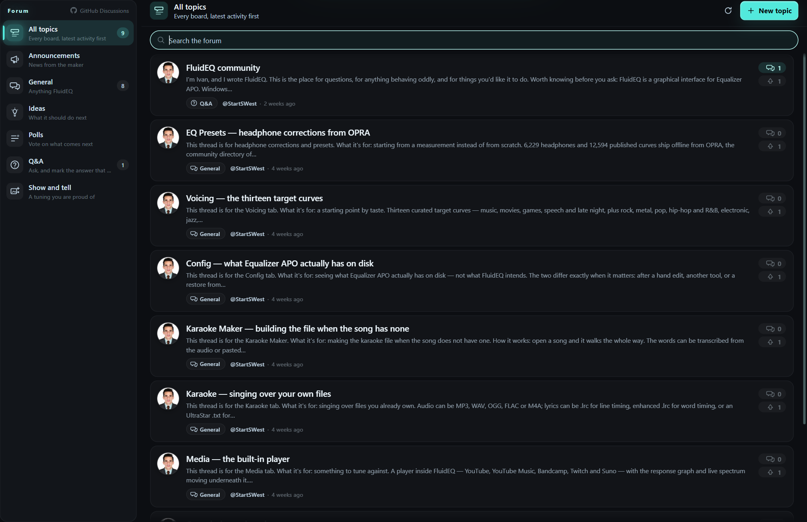
Try it
- Open Help → Forum and pick a board: Announcements, General, Ideas, Polls, Q&A or Show and tell.
- Search the forum, or open a topic to read the replies.
- Press Sign in with GitHub, finish in your browser, then post a New topic or a reply.